設計担当
検討のスピードを保つ
必要な建具タイプを早い段階で用意。ファミリ制作ではなく、プラン検討と設計判断に時間を使えます。
Arch-LMOS（アーク・エルモス）とは、BIMモデル（Model）の導入・活用・運用・改善（Lifecycle）を支える共通基盤（Operating System）です。
テンプレート・ファミリ・ツール・ナレッジを体系的に提供します。
2027年1月末 正式リリース予定
メニューから、必要な形式を選ぶだけ。
ファミリ編集の専門知識がなくても、設計に必要な標準ファミリを生成できます。
「どう作るか」から、「何を設計するか」へ
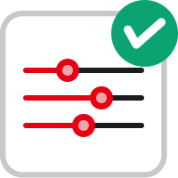
パラメーターチェッカパラメータの有無や、寸法・面積などの数値範囲をチェック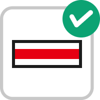
LGSチェッカ「公共建築工事標準仕様書」に基づいてLGS壁をチェック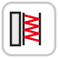
断熱材作成構造要素のクリックした面に断熱材・フカシを追加課題
タイプを一つ用意するために、部材を探し、仕様を読み解き、ファミリを編集し、動作を確認し、名前を整える。
小さく見える作業の積み重ねが、設計の時間を圧迫しています。
専門的な制作工程を、
迷わない選択操作へ。
解決方法
必要なのは、ファミリ編集の専門知識ではありません。
形式・枠・沓摺・パネル・寸法など、建具の用語と必要な仕様が分かれば、選択だけでタイプを生成できます。
実例：ドア
枠も、ドアパネルも、沓摺も。必要な仕様が増えるほど、ファミリ作成と変更の手間も増えていきます。
Arch-LMOSのタイプ生成なら、仕様を選ぶだけで標準タイプ生成ができます。
生成タイプ名WD_01（900×2100_01）
カテゴリごとに部材を選び、ドアタイプを生成します。
パネルデザイン20種類を含め、各種開き戸が生成可能
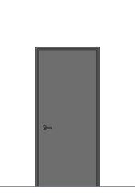
フラッシュ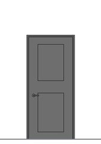
窓+窓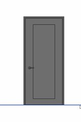
框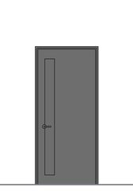
スリット窓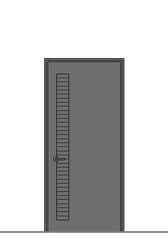
スリットガラリ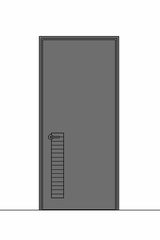
スリットガラリ下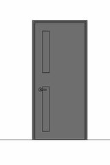
スリット窓+スリットガラリ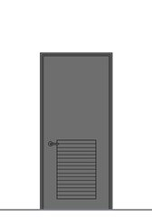
ガラリ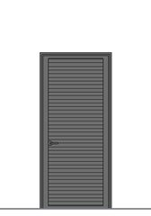
全ガラリ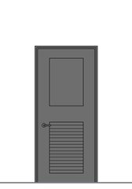
窓+ガラリ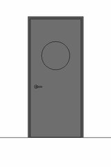
丸窓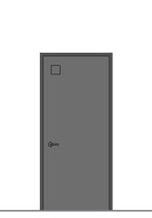
小窓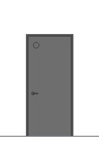
小丸窓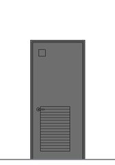
小窓+ガラリ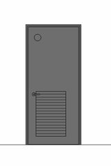
小丸窓+ガラリ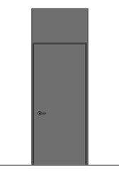
開き戸 幕板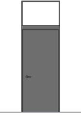
開き戸 幕板ガラス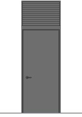
開き戸 幕板ガラリ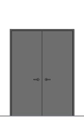
両開き戸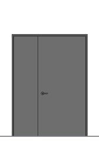
親子開き戸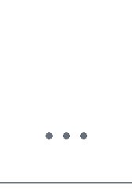
枠と小枠を組み合わせて、壁との納まりを選択
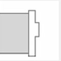
中ヒバタ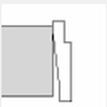
片ヒバタ01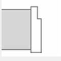
片ヒバタ02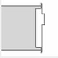
潰し枠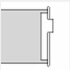
PB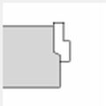
小枠 標準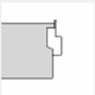
小枠 潰し枠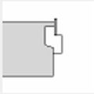
小枠 PB床との納まりを選択
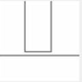
A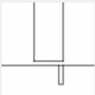
B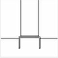
C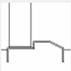
D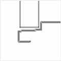
EG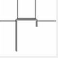
F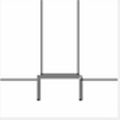
GSD・SW・SG など、建具表で使っている符号に対応。符号を選んでタイプを作成でき、タイプ名や集計表にもそのまま反映されます。
符号ごとに「特定防火設備」「防火設備」などの防火区分を指定できます。図面の注記を手で書き足す必要がなく、建具表や集計表にも同じ情報がそのまま反映されます。
実例：窓
形式も、枠も、ガラスも。条件が増えるほど、作り分けと変更の手間も増えていきます。
窓の仕様を選ぶだけで、ジェネリックファミリ準拠の標準タイプへ。
生成タイプ名AW-1
実例：シャッター
ケース、スラット、ガイドレール、開口寸法。部材が多いシャッターも、同じ選択操作で仕様を整理し、標準タイプとして生成します。
生成タイプ名軽量_W3000×H2500
使い方
パネル・枠・沓摺などを、いつもの建具用語で選択します。
標準の名前と必要なパラメータを持ったタイプがプロジェクトへ。
仕様が変わっても、一から作り直す必要はありません。
選んだ仕様を変更して、タイプを再生成・更新します。
チームで使える標準
検討のスピードを保つ
必要な建具タイプを早い段階で用意。ファミリ制作ではなく、プラン検討と設計判断に時間を使えます。
標準を現場に広げる
同じ生成フローを共有し、専門担当者への依頼集中を抑えながら、運用ルールを定着させます。
品質のばらつきを抑える
担当者ごとの設定差、独自の命名、似たタイプの増殖を減らし、案件をまたいで品質を管理できます。
Revit導入前後に必要な「標準環境」をまとめて提供する、BIM標準化パッケージです。